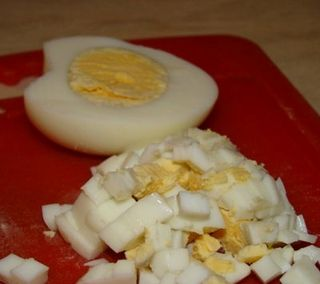
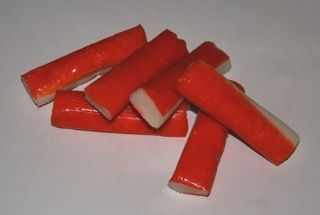
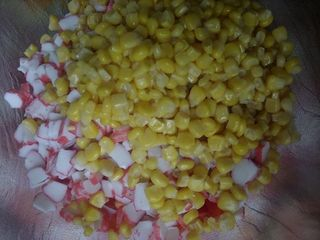

Шаг 1: готовим яйца.

Куриные яйца опускаем в кастрюлю с холодной водой, после того как вода закепит, достаем их через 7-10 минут. После того как они сварились, остужаем их холодной водой. Далее очищаем от скорлупы, и нарезаем их как можно мельче.
Шаг 2: подготавливаем ингредиенты.

Крабовые палочки очищаем от упаковки, потом так же как яйца нарезаем кубиками. Берем банку кукрузы, открываем и сливаем сок. Кто любит салаты с луком, очищаем его, и так же мелко нарезаем.
Шаг 3: смешиваем ингредиенты салата.

В салатницу отправляем нарезанные яйца, крабовые палочки, кукурузу и лук, если все же вы решили делать с ним. Добавляем соль по вкусу и перемешиваем все ингредиенты.